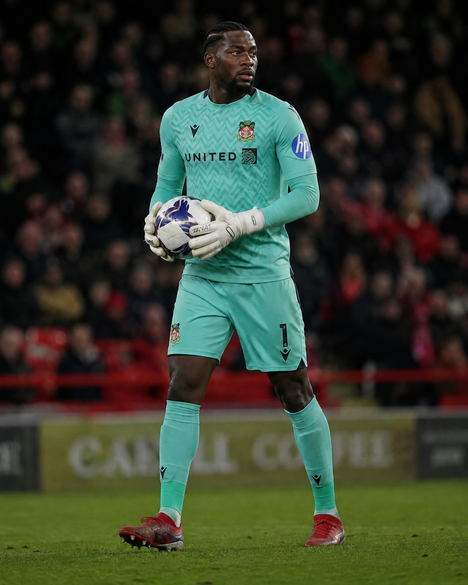

Arthur Okonkwo
GK
25Age
6'5"Height
RightFoot
76OVR
Important · Contract: 2y
Profile
Born in Camden to Nigerian parents, Okonkwo joined Arsenal's academy at eight and rose through their youth ranks. He went out on development loans to sharpen his game — Crewe Alexandra, where he made his professional debut, then Austrian Bundesliga side Sturm Graz — before a breakthrough season-long loan to Wrexham in 2023–24, replacing the retired Ben Foster. He made 40 appearances across all competitions with 16 clean sheets, helping the club reach League One as National League runners-up. Wrexham made the move permanent on a free transfer in June 2024, and Okonkwo switched international allegiance to Nigeria in April 2026.
Attributes
43DIV
74HAN
75KIC
80REF
76SPD
74POS
Physical
Acceleration43
Agility42
Balance30
Jumping62
Sprint Speed43
Stamina28
Strength60
Mental
Aggression26
Att. Position5
Composure52
Interceptions14
Reactions67
Vision42
Skill Moves★★★★☆
Weak Foot★★★★★
Roles (+/++)6
PlayStyles
Far ThrowCross Claimer
Career
2022-23
Crewe Alexandra (loan)League Two
23 Apps · 0 Goals
2022-23
Sturm Graz (loan)Austrian Bundesliga
15 Apps · 0 Goals
2023-24
Wrexham (loan)League Two
36 Apps · 0 Goals
2025/26
WrexhamEFL Championship
20 Apps
2026/27
WrexhamPremier League & FA Cup
33 Apps